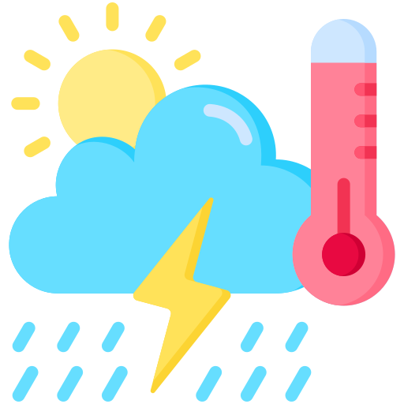
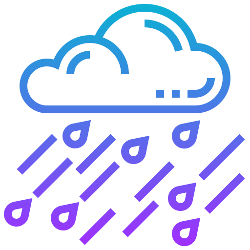
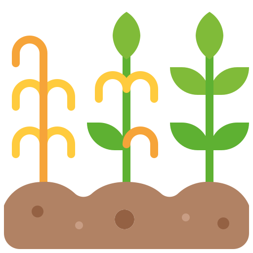

Downscaling for Climate Scenarios
Developed by Tragsatec for AEMET
Developed by Tragsatec for AEMET

Deep-learning downscaling of seasonal forecasts

Precipitation extremes study
Climate scenarios information for water reservoirs

Climate scenarios information for AquaCrop model